Kiva Crowdfunding 2
Table of contents
*분석 대상 데이터셋: Kiva Crowdfunding Data
- 데이터셋 출처
- kiva.org: 세계 각국의 경제적으로 어려운 사람들에게 돈을 빌려주는 online crowdfunding platform
- kiva_loans.csv: 2014.01.01~2017.07.26 사이에 kiva에 올라온 loan 정보 데이터. (671,205개의 row)
- kiva_mpi_region_locations.csv: 2,772개의 row. 각 지역의 geolocation & poverty level 정보
- loan_theme_ids.csv: 779,092개의 row. 각 loan의 theme에 대한 정보.
- loan_theme_by_region.csv: 15,736개의 row. 각 loan theme과 연결된 regional 정보들
데이터 정리
# 필요한 라이브러리 import
import pandas as pd
import numpy as np
from matplotlib import pyplot as plt
import seaborn as sns
import scipy.stats as stats
kiva_df = pd.read_csv('data/kiva_loans.csv')
kiva_df.head(3)
| id | funded_amount | loan_amount | activity | sector | use | country_code | country | region | currency | partner_id | posted_time | disbursed_time | funded_time | term_in_months | lender_count | tags | borrower_genders | repayment_interval | date | |
|---|---|---|---|---|---|---|---|---|---|---|---|---|---|---|---|---|---|---|---|---|
| 0 | 653051 | 300 | 300 | Fruits & Vegetables | Food | To buy seasonal, fresh fruits to sell. | PK | Pakistan | Lahore | PKR | 247 | 2014-01-01 06:12:39+00:00 | 2013-12-17 08:00:00+00:00 | 2014-01-02 10:06:32+00:00 | 12 | 12 | nan | female | irregular | 2014-01-01 |
| 1 | 653053 | 575 | 575 | Rickshaw | Transportation | to repair and maintain the auto rickshaw used in their business. | PK | Pakistan | Lahore | PKR | 247 | 2014-01-01 06:51:08+00:00 | 2013-12-17 08:00:00+00:00 | 2014-01-02 09:17:23+00:00 | 11 | 14 | nan | female, female | irregular | 2014-01-01 |
| 2 | 653068 | 150 | 150 | Transportation | Transportation | To repair their old cycle-van and buy another one to rent out as a source of income | IN | India | Maynaguri | INR | 334 | 2014-01-01 09:58:07+00:00 | 2013-12-17 08:00:00+00:00 | 2014-01-01 16:01:36+00:00 | 43 | 6 | user_favorite, user_favorite | female | bullet | 2014-01-01 |
| 3 | 653063 | 200 | 200 | Embroidery | Arts | to purchase an embroidery machine and a variety of new embroidery materials. | PK | Pakistan | Lahore | PKR | 247 | 2014-01-01 08:03:11+00:00 | 2013-12-24 08:00:00+00:00 | 2014-01-01 13:00:00+00:00 | 11 | 8 | nan | female | irregular | 2014-01-01 |
| 4 | 653084 | 400 | 400 | Milk Sales | Food | to purchase one buffalo. | PK | Pakistan | Abdul Hakeem | PKR | 245 | 2014-01-01 11:53:19+00:00 | 2013-12-17 08:00:00+00:00 | 2014-01-01 19:18:51+00:00 | 14 | 16 | nan | female | monthly | 2014-01-01 |
- funded_amount: amount disbursed by Kiva to the field agent (USD)
- loan_amount: amount disbursed by the field agent to the borrower
- funded_amount < loan_amount인 경우: 48328건
- funded_amount > loan_amount인 경우: 2건
- country_code: ISO country code
- posted_time: the time at which the loan is posted on Kiva by the field agent
- disbursed_time: the time at which the loan is disbursed by the field agent to the borrower
- funded_time: the time at which the loan posted to Kiva gets funded by lenders completely
- null값: 48331개 (funded_amount >= loan_amount인 경우 중 3건도 funded_time이 null로 나옴…)
- term_in_months: the duration for which the loan was disbursed in months
- date: posted_time에서 date만 추출한 것. (Kiva에 올라온 날짜)
-
datetime 데이터 정리
# datetime 형식 변환 kiva_df['posted_time'] = pd.to_datetime(kiva_df['posted_time']) kiva_df['disbursed_time'] = pd.to_datetime(kiva_df['disbursed_time']) kiva_df['funded_time'] = pd.to_datetime(kiva_df['funded_time']) # posted_time -> Month, Quarter 단위로 저장해둠 kiva_df['posted_month'] = kiva_df['posted_time'].dt.strftime('%Y%m') kiva_df['posted_quarter'] = kiva_df['posted_time'].dt.to_period("Q").astype('str') -
borrower type 정리
## borrower를 성별 / 단체 유무로 정리 def borrower_type(x): if type(x) != str: borrower = 'N/A' elif x == 'female': borrower = 'female' elif x == 'male': borrower = 'male' else: borr_set = set(x.split(', ')) if 'female' in borr_set: if 'male' in borr_set: borrower = 'mixed_group' else: borrower = 'female_group' else: borrower = 'male_group' return borrower kiva_df['borrower_type'] = kiva_df['borrower_genders'].apply(lambda x: borrower_type(x))
Funds for Philippines
: kiva를 통해 받은 funding 금액이 가장 많은 국가인 Philippines에 대해 집중 탐구

# philippines 데이터만 따로 추출
ph_df = kiva_df[kiva_df['country'] == 'Philippines']
ph_df.info()
<class 'pandas.core.frame.DataFrame'>
Int64Index: 160441 entries, 51 to 670445
Data columns (total 23 columns):
# Column Non-Null Count Dtype
--- ------ -------------- -----
0 id 160441 non-null int64
1 funded_amount 160441 non-null float64
2 loan_amount 160441 non-null float64
3 activity 160441 non-null object
4 sector 160441 non-null object
5 use 160361 non-null object
6 country_code 160441 non-null object
7 country 160441 non-null object
8 region 160360 non-null object
9 currency 160441 non-null object
10 partner_id 160441 non-null float64
11 posted_time 160441 non-null datetime64[ns, UTC]
12 disbursed_time 160441 non-null datetime64[ns, UTC]
13 funded_time 157607 non-null datetime64[ns, UTC]
14 term_in_months 160441 non-null float64
15 lender_count 160441 non-null int64
16 tags 94094 non-null object
17 borrower_genders 160361 non-null object
18 repayment_interval 160441 non-null object
19 date 160441 non-null object
20 posted_quarter 160441 non-null object
21 borrower_type 160441 non-null object
22 posted_month 160441 non-null object
dtypes: datetime64[ns, UTC](3), float64(4), int64(2), object(14)
memory usage: 29.4+ MB
분기별 추이
-
분기별 loan count
plt.figure(figsize=(16, 6)) # 2017Q3은 2017.07.26까지의 기록밖에 없으므로 제외하고 시각화 sns.lineplot(data=ph_df[ph_df['posted_quarter'] != '2017Q3'], x='posted_quarter', y='funded_amount', estimator='count', ci=None, color='#C88686') plt.ylim(5000, 18000);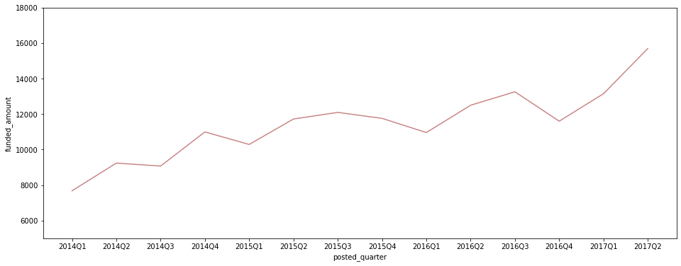
-
분기별 평균 funded_amount
plt.figure(figsize=(16, 6)) sns.lineplot(data=ph_df[ph_df['posted_quarter'] != '2017Q3'], x='posted_quarter', y='funded_amount', color='#C88686') plt.ylim(250, 450);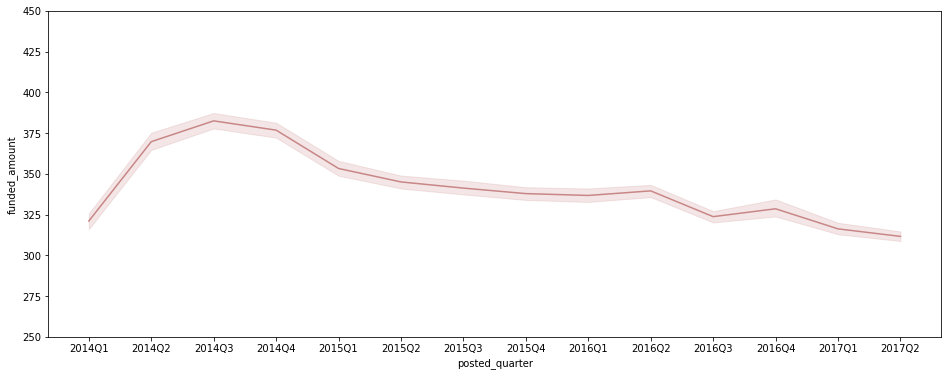
-
분기별 총 funded_amount
plt.figure(figsize=(16, 6)) sns.lineplot(data=ph_df[ph_df['posted_quarter'] != '2017Q3'], x='posted_quarter', y='funded_amount', estimator='sum', ci=None, color='#C88686') plt.ylim(1500000, 5500000);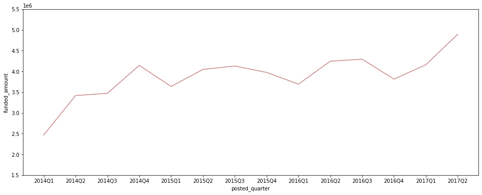
- 2014년 이후 post당 평균 funded_amount는 줄고 있지만, 올라온 loan post 수 자체가 계속 증가세를 보임에 따라 총 funded_amount도 증가 추세.
borrower 성별
-
borrower type별 loan count
sns.countplot(data=ph_df, x='borrower_type', palette='pink');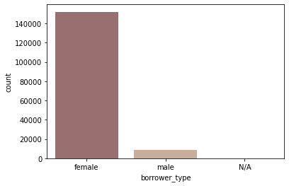
- 여러 borrower가 그룹으로 빌리는 경우는 없음 (female_group, male_group, mixed_group)
- female 혼자 빌리는 경우가 압도적 (전체 loan의 약 95%)
ph_df.groupby('borrower_type')['funded_amount'].count()borrower_type N/A 80 female 151984 male 8377 Name: funded_amount, dtype: int64 -
borrower type별 평균 funded amount
sns.barplot(data=ph_df, x='borrower_type', y='funded_amount', palette='pink');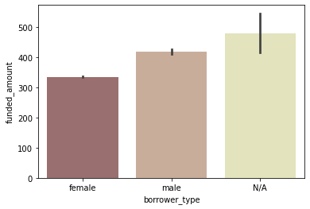
- 평균 funded amount는 오히려 female이 많은 편은 아님
-
분기별 총 funded amount 비교
plt.figure(figsize=(16, 6)) sns.lineplot(data=ph_df[ph_df['posted_quarter'] != '2017Q3'], x='posted_quarter', y='funded_amount', hue='borrower_type', estimator='sum', ci=None, palette='pink');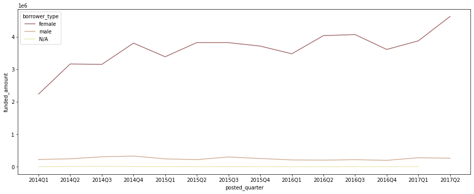
- 총 funded amount 자체도 female이 모든 기간에 가장 압도적.
- female borrower를 중심으로 funded_amount가 크게 증가세
borrower 지역
-
funded_amount Top 10 지역
ph_region = ph_df.groupby('region')[['funded_amount']].sum().reset_index() ph_region.sort_values(by='funded_amount', ascending=False, inplace=True) # Top 10까지만 시각화 plt.figure(figsize=(7, 5)) sns.barplot(data=ph_region.head(10), x='funded_amount', y='region', palette='pink');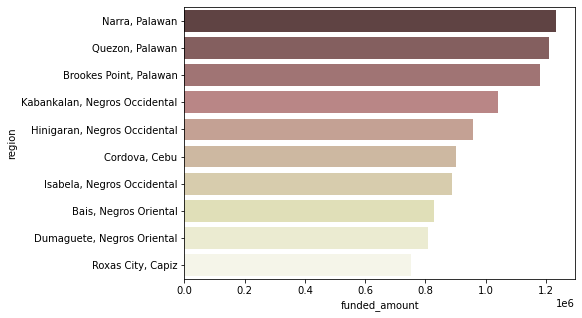
- Palawan과 Negros Occidental의 지역들이 상위권에 많이 포진되어 있음
- region의 뒷부분을 따로 ‘province’로 저장
- region에 적힌 구조가 대체로 ‘Narra, Palawan’처럼 ‘municipality, province’의 구조로 되어 있다고 생각해, 쉼표(,) 뒷부분을 분리해서 저장
# 쉼표가 없는 region명이 몇 개인지 확인 print(len(ph_region)) print(len(ph_region[ph_region['region'].str.contains(',')]))3638 3249→ 쉼표로 분리된 region명이 대부분이므로, 쉼표를 기준으로 나누기로 함.
# 쉼표(,)를 기준으로 뒷부분 반을 province로 저장하고, 쉼표 없이 하나가 통째로 region명인 경우 그대로 province에 저장. ph_region_temp = ph_region['region'].str.rsplit(',', 1, expand=True) for i in ph_region_temp.index: if ph_region_temp.loc[i, 1]: ## 1이 None이 아니면 실행됨 (None이면 else로) ph_region.loc[i, 'province'] = ph_region_temp.loc[i, 1] else: ph_region.loc[i, 'province'] = ph_region_temp.loc[i, 0] ph_region.head()region funded_amount province 2000 Narra, Palawan 1234625.0 Palawan 2556 Quezon, Palawan 1210875.0 Palawan 583 Brookes Point, Palawan 1180100.0 Palawan 1381 Kabankalan, Negros Occidental 1040700.0 Negros Occidental 1282 Hinigaran, Negros Occidental 956950.0 Negros Occidental -
province별 funded_amount 정리, 비교
ph_province = ph_region.groupby('province')[['funded_amount']].sum().reset_index() ph_province.sort_values(by='funded_amount', ascending=False, inplace=True) # Top 10까지만 시각화 plt.figure(figsize=(7, 5)) sns.barplot(data=ph_province.head(10), x='funded_amount', y='province', palette='pink');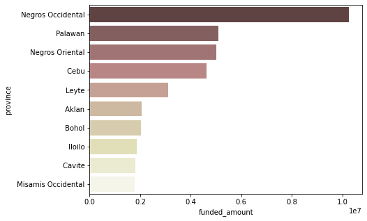
- Negros Occidental이 가장 압도적
-
각 province별로, 어떤 sector의 funded_amount가 많은지 확인
# ph_df에 'province' 칼럼를 더해줌 ph_df = pd.merge(ph_df, ph_region[['region', 'province']], how='left', on='region')# funded amount Top 10 province만 따로 저장 top_countries = ph_df.groupby('province')[['funded_amount']].sum().sort_values(by='funded_amount', ascending=False).head(10).index # funded amount 내림차순으로 sector 순서 정렬 sectors_order = ph_df.groupby('sector')[['funded_amount']].sum().sort_values(by='funded_amount', ascending=False).index loans_province_sector = pd.pivot_table(ph_df, index='province', columns='sector', values='funded_amount', fill_value=0, aggfunc='sum') loans_province_sector = loans_province_sector[loans_province_sector.index.isin(top_countries)] # top 10 province만 대상으로 자름 loans_province_sector = loans_province_sector[sectors_order] # 전체 loan amount가 가장 높은 sector부터 내림차순 정렬 loans_province_sector = loans_province_sector.T loans_province_sector = loans_province_sector[top_countries] # 전체 loan amount가 가장 높은 province부터 내림차순 정렬 # heatmap으로 시각화 plt.figure(figsize=(14, 9)) sns.heatmap(loans_province_sector, annot=True, cmap='pink_r', fmt='.0f') plt.xticks(rotation=40);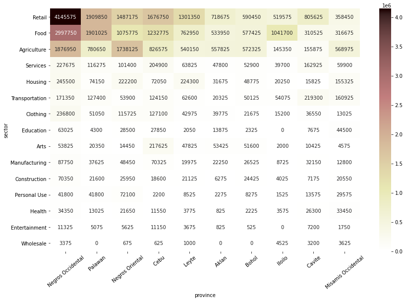
- Negros Occidental은 Retail sector로 빌린 금액이 가장 많음
- Palawan은 Retail과 Food sector가 비슷하게 많음
- Negros Occidental과 Negros Oriental은 Agriculture sector로 빌린 금액도 많은 편
repayment interval
-
repayment interval별 총 funded_amount
sns.barplot(data=ph_df, x='repayment_interval', y='funded_amount', estimator=np.sum, ci=None, palette='pink');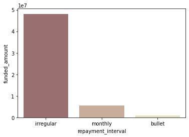
-
repayment interval별 평균 funded_amount
sns.barplot(data=ph_df, x='repayment_interval', y='funded_amount', palette='pink');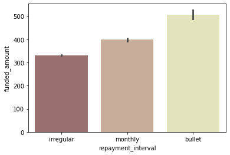
-
repayment interval별 loan 수
sns.countplot(data=ph_df, x='repayment_interval', palette='pink');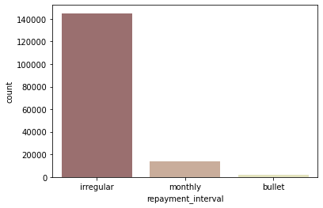
- irregular 상환 방식의 loan이 가장 많음
- irregular 상환 방식의 loan이 평균 funded amount가 많은 편은 아니지만, 수 자체가 압도적이기 때문에 전체 funded amount 중 irregular 상환 방식인 금액이 압도적
- 전체 kiva loan 중에서는 monthly로 상환되는 금액이 가장 많은 것을 생각하면, irregular 상환 금액이 많다는 것은 Philippines의 특징인 듯
-
분기별 repayment interval별 funded amount
quarter_interval = ph_df.groupby(['posted_quarter', 'repayment_interval'])[['funded_amount']].sum().reset_index() quarter_interval = quarter_interval[quarter_interval['posted_quarter'] != '2017Q3'] plt.figure(figsize=(16, 6)) sns.lineplot(data=quarter_interval, x='posted_quarter', y='funded_amount', hue='repayment_interval', palette='pink', hue_order=['irregular', 'monthly', 'bullet']) # legend를 box 밖으로 빼 줌 plt.legend(bbox_to_anchor=(1.01, 1), borderaxespad=0);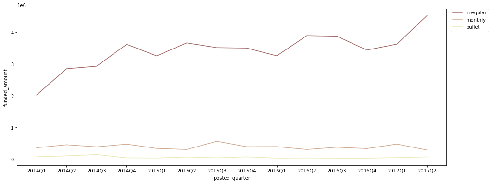
- irregular 상환 방식의 금액이 가장 많이 증가하는 추세
- irregular 상환보다는 monthly 상환이 더 안정적인 자금 계획에 유리하므로, irregular 상환 방식보다는 monthly 상환 방식을 늘리는 것이 좋다고 생각됨
주요 sector, activity, use
-
sector별 funded amount
# funded amount 순으로 내림차순 정렬해 시각화 ph_sectors = ph_df.groupby('sector')[['funded_amount']].sum().sort_values(by='funded_amount', ascending=False).reset_index() plt.figure(figsize=(12, 5)) sns.barplot(data=ph_sectors, x='sector', y='funded_amount', palette='pink') plt.xticks(rotation=40);
- Retail, Food, Agriculture 관련 funded amount가 가장 많음
-
funded amount Top 10 activities
ph_activities = ph_df.groupby(['activity', 'sector'])[['funded_amount']].sum().sort_values(by='funded_amount', ascending=False).reset_index() ph_activities.head(10)activity sector funded_amount 0 General Store Retail 15025550.0 1 Pigs Agriculture 6039975.0 2 Farming Agriculture 4063150.0 3 Fishing Food 3129675.0 4 Fish Selling Food 2969850.0 5 Food Production/Sales Food 2659425.0 6 Personal Housing Expenses Housing 1710425.0 7 Fruits & Vegetables Food 1563675.0 8 Retail Retail 1366075.0 9 Motorcycle Transport Transportation 1067450.0 → Top 10 activities 시각화
plt.figure(figsize=(7, 5)) sns.barplot(data=ph_activities.head(10), x='funded_amount', y='activity', palette='pink');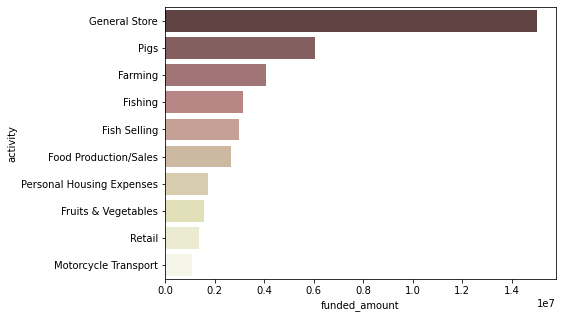
- ‘Retail’ sector의 ‘General Store’ 목적의 funded amount가 압도적으로 많고, 그 다음은 오히려 ‘Agriculture’ sector의 ‘Pigs’와 ‘Farming’ 목적의 funded amount가 많음
- 여러 섬으로 구성된 국가인만큼, ‘Food’ sector 중에서는 ‘Fishing’과 ‘Fish Selling’ 목적의 funded amount가 많음
-
funded amount Top 10 use
ph_use = ph_df.groupby(['use'])[['funded_amount']].sum().sort_values(by='funded_amount', ascending=False).reset_index() plt.figure(figsize=(7, 5)) sns.barplot(data=ph_use.head(10), x='funded_amount', y='use', palette='pink');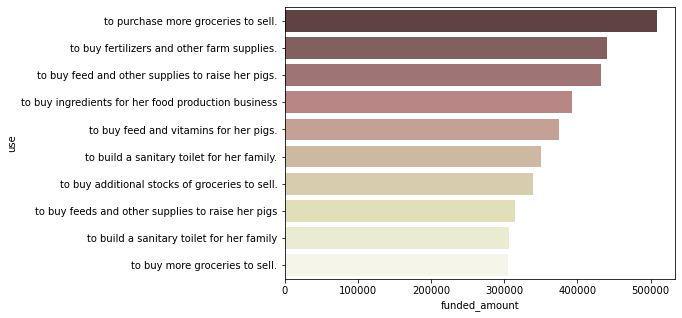
- 같은 내용이라도 사용한 단어에 따라 다르게 집계되므로 정확히 파악하기 어렵지만, ‘grocery’, ‘pig’, ‘food production business’ 등의 단어들이 눈에 띔
-
‘General Store’ 관련 Top 10 use
# 우선, activity, sector, use별 funded amount를 정리 ph_use_activity = ph_df.groupby(['use', 'activity', 'sector'])[['funded_amount']].sum().sort_values(by='funded_amount', ascending=False).reset_index() ph_use_activity.head()use activity sector funded_amount 0 to purchase more groceries to sell. General Store Retail 501400.0 1 to buy feed and other supplies to raise her pigs. Pigs Agriculture 431850.0 2 to buy fertilizers and other farm supplies. Farming Agriculture 427725.0 3 to buy feed and vitamins for her pigs. Pigs Agriculture 374800.0 4 to buy ingredients for her food production business Food Production/Sales Food 344125.0 → ‘General Store’ Top 10 use 시각화
plt.figure(figsize=(7, 5)) sns.barplot(data=ph_use_activity[ph_use_activity['activity'] == 'General Store'].head(10), x='funded_amount', y='use', palette='pink');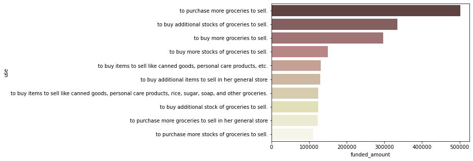
- 같은 내용이라도 사용한 단어에 따라 다르게 집계되므로 정확히 파악하기 어렵지만, General Store를 위한 fund로는 ‘grocery 구매’ 관련 목적이 많다고 생각됨
‘use’ 단어 빈도 분석
- ‘use’는 같은 내용이라도 단어 사용 등에 따라 다르게 집계되므로, 단순 집계 후 시각화보다 단어별로 쪼개서 파악하는 것이 도움이 될 수 있다고 생각
- 사유를 단어별로 나눠서 분석해, 어떤 단어가 빈번하게 등장하는지 확인하고, 이로부터 필리핀의 전반적인 loan needs를 파악
## 단어 빈도 계산 & wordcloud 생성 & 빈번하게 사용된 단어 bar graph로 시각화하는 코드를 미리 함수로 다 만들어 둠
## 각 loan의 funded amount는 고려하지 않고, count만 고려
import nltk
from wordcloud import WordCloud
from collections import Counter
# wordcloud mask
x, y = np.ogrid[:1200, :1200]
mask = (x - 600) ** 2 + (y - 600) ** 2 > 520 ** 2
mask = 255 * mask.astype(int)
def count_words(sector_name):
# Text Cleaning & Case Conversion & Tokenization
words = []
for content in ph_df[ph_df['sector'] == sector_name]['use']:
content_cleaned = str(content).replace('.', '').replace(',','').strip().lower() # ., 정도만 제거, strip, lower
words.extend(content_cleaned.split()) # 간단하게 공백 기준으로만 쪼개줌
# POS Tagging
tokens_pos = nltk.pos_tag(words)
# Noun, Verb만 추출 & Lemmatization
wlem = nltk.WordNetLemmatizer()
lemm_words = []
for word, pos in tokens_pos:
if ('NN' in pos) | ('VB' in pos):
lemm_words.append(wlem.lemmatize(word))
# Counter로 빈도 계산
c = Counter(lemm_words)
return c
def generate_wordcloud(c):
# generate wordcloud
wordcloud = WordCloud(relative_scaling=.2,
background_color='white',
colormap='pink',
mask=mask).generate_from_frequencies(c)
plt.figure(figsize=(7, 7))
plt.imshow(wordcloud)
plt.axis('off')
def visualize_top10_words(c):
word_count = pd.DataFrame.from_dict(c, orient='index', columns=['count']).reset_index().rename(columns={'index':'word'})
word_count.sort_values(by='count', ascending=False, inplace=True)
plt.figure(figsize=(6, 4))
sns.barplot(data=word_count.head(10), x='count', y='word', palette='pink')
-
Retail sector의 use
retail_c = count_words('Retail') generate_wordcloud(retail_c)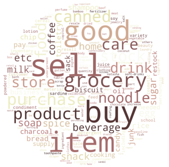
- canned goods, grocery 등의 item들을 사기 위한 목적이 많다고 파악됨
visualize_top10_words(retail_c)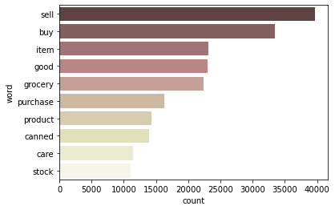
-
Food sector의 use
food_c = count_words('Food') generate_wordcloud(food_c)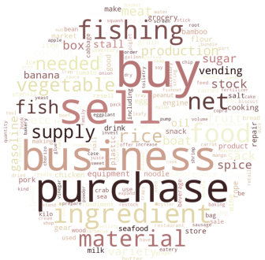
- ‘food’ sector도 단순히 자신의 식량을 사기 위한 것보다, ‘food production business’의 재료 구매 & 판매할 식료품 구매 목적이 많다고 판단됨
visualize_top10_words(food_c)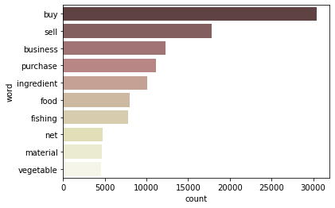
-
Agriculture sector의 use
agri_c = count_words('Agriculture') generate_wordcloud(agri_c)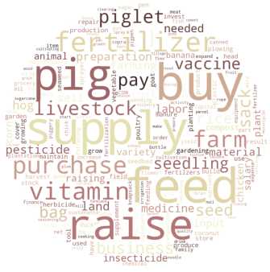
- pig를 위한 식량 등을 구매하는 목적이 많고, 그 다음으로는 농업을 위한 fertilizer 등의 구매 목적도 많다고 판단됨
- 돼지 농장이 필리핀의 주요 business 중 하나라고 추정됨
visualize_top10_words(agri_c)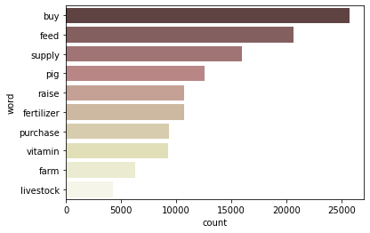
데이터 결합해 분석
데이터 정리
-
kiva_mpi_region_locations.csv
location_df = pd.read_csv('data/kiva_mpi_region_locations.csv') location_df.head(3)LocationName ISO country region world_region MPI geo lat lon 0 Badakhshan, Afghanistan AFG Afghanistan Badakhshan South Asia 0.387 (36.7347725, 70.81199529999999) 36.7348 70.812 1 Badghis, Afghanistan AFG Afghanistan Badghis South Asia 0.466 (35.1671339, 63.7695384) 35.1671 63.7695 2 Baghlan, Afghanistan AFG Afghanistan Baghlan South Asia 0.3 (35.8042947, 69.2877535) 35.8043 69.2878 - ISO: unique ID for country
- MPI: multidimensional poverty index – 수치가 높을수록 poverty level이 높은 것
→ 중복값 제거
print('중복 제거 이전: ', len(location_df)) location_df.drop_duplicates(inplace=True, ignore_index=True) print('중복 제거 이후: ', len(location_df))중복 제거 이전: 2772 중복 제거 이후: 1009→ LocationName이 null값인 행 제외 (LocationName이 null이면 region, MPI도 다 null임)
print('결측치 제거 이전: ', len(location_df)) location_df = location_df[~location_df['LocationName'].isna()] location_df.reset_index(inplace=True, drop=True) print('결측치 제거 이후: ', len(location_df))결측치 제거 이전: 1009 결측치 제거 이후: 984 -
loan_theme_ids.csv
loan_themes_df = pd.read_csv('data/loan_theme_ids.csv') loan_themes_df.head(3)id Loan Theme ID Loan Theme Type Partner ID 0 638631 a1050000000skGl General 151 1 640322 a1050000000skGl General 151 2 641006 a1050000002X1ij Higher Education 160 → id 제외하고 다 null값인 경우 삭제 (Loan Theme ID가 null이면 Loan Theme Type, Partner ID도 다 null)
print('결측치 제거 이전: ', len(loan_themes_df)) loan_themes_df = loan_themes_df[~loan_themes_df['Loan Theme ID'].isna()] loan_themes_df.reset_index(inplace=True, drop=True) print('결측치 제거 이후: ', len(loan_themes_df)) -
loan_themes_by_region.csv
themes_region_df = pd.read_csv('data/loan_themes_by_region.csv') themes_region_df.head(3)Partner ID Field Partner Name sector Loan Theme ID Loan Theme Type country forkiva region geocode_old ISO number amount LocationName geocode names geo lat lon mpi_region mpi_geo rural_pct 0 9 KREDIT Microfinance Institution General Financial Inclusion a1050000000slfi Higher Education Cambodia No Banteay Meanchey (13.75, 103.0) KHM 1 450 Banteay Meanchey, Cambodia [(13.6672596, 102.8975098)] Banteay Meanchey Province; Cambodia (13.6672596, 102.8975098) 13.6673 102.898 Banteay Mean Chey, Cambodia (13.6672596, 102.8975098) 90 1 9 KREDIT Microfinance Institution General Financial Inclusion a10500000068jPe Vulnerable Populations Cambodia No Battambang Province nan KHM 58 20275 Battambang Province, Cambodia [(13.0286971, 102.989615)] Battambang Province; Cambodia (13.0286971, 102.989615) 13.0287 102.99 Banteay Mean Chey, Cambodia (13.6672596, 102.8975098) 90 2 9 KREDIT Microfinance Institution General Financial Inclusion a1050000000slfi Higher Education Cambodia No Battambang Province nan KHM 7 9150 Battambang Province, Cambodia [(13.0286971, 102.989615)] Battambang Province; Cambodia (13.0286971, 102.989615) 13.0287 102.99 Banteay Mean Chey, Cambodia (13.6672596, 102.8975098) 90 - forkiva: Was this loan theme created specifically for Kiva?
- geocode_old: 옛날 geocoding system
- ISO: unique ID for country
- number: Number of loans funded in this LocationName and this loan theme
- amount: Dollar value of loans funded in this LocationName and this loan theme
- LocationName: “{region}, {country}”
- names: All placenames that the Gmaps API associates with LocationName
- mpi_region: MPI Region where we think this loan theme is located
- mpi_geo: Lat-Lon pair where we think this MPI region is located
- rural_pct: The percentage of this field partners’ borrowers that are in rural areas
kiva만을 위한 loan 비중 확인
-
kiva_df와 loan_themes_df를 merge
kiva_loan_themes = kiva_df.copy() kiva_loan_themes.drop(['loan_amount', 'country_code', 'disbursed_time', 'tags', 'date', 'borrower_genders'], axis='columns', inplace=True) kiva_loan_themes = pd.merge(kiva_loan_themes, loan_themes_df, how='left', on='id') kiva_loan_themes.head(3)id funded_amount activity sector use country region currency partner_id posted_time funded_time term_in_months lender_count repayment_interval posted_month posted_quarter borrower_type Loan Theme ID Loan Theme Type Partner ID 0 653051 300 Fruits & Vegetables Food To buy seasonal, fresh fruits to sell. Pakistan Lahore PKR 247 2014-01-01 06:12:39+00:00 2014-01-02 10:06:32+00:00 12 12 irregular 201401 2014Q1 female nan nan nan 1 653053 575 Rickshaw Transportation to repair and maintain the auto rickshaw used in their business. Pakistan Lahore PKR 247 2014-01-01 06:51:08+00:00 2014-01-02 09:17:23+00:00 11 14 irregular 201401 2014Q1 female_group a1050000000sjEC Underserved 247 2 653068 150 Transportation Transportation To repair their old cycle-van and buy another one to rent out as a source of income India Maynaguri INR 334 2014-01-01 09:58:07+00:00 2014-01-01 16:01:36+00:00 43 6 bullet 201401 2014Q1 female a1050000002VkWz Underserved 334 → 결합 후의 null값 파악
kiva_loan_themes.info()<class 'pandas.core.frame.DataFrame'> Int64Index: 671205 entries, 0 to 671204 Data columns (total 17 columns): # Column Non-Null Count Dtype --- ------ -------------- ----- 0 id 671205 non-null int64 1 funded_amount 671205 non-null float64 2 activity 671205 non-null object 3 sector 671205 non-null object 4 country 671205 non-null object 5 region 614405 non-null object 6 currency 671205 non-null object 7 partner_id 657698 non-null float64 8 posted_time 671205 non-null datetime64[ns, UTC] 9 funded_time 622874 non-null datetime64[ns, UTC] 10 term_in_months 671205 non-null float64 11 lender_count 671205 non-null int64 12 borrower_genders 666984 non-null object 13 repayment_interval 671205 non-null object 14 Loan Theme ID 657692 non-null object 15 Loan Theme Type 657692 non-null object 16 Partner ID 657692 non-null float64 dtypes: datetime64[ns, UTC](2), float64(4), int64(2), object(9) memory usage: 92.2+ MB -
위에서 만든 kiva_loan_themes에 themes_region_df를 merge
temp1 = kiva_loan_themes[['funded_amount', 'posted_quarter', 'Loan Theme ID', 'borrower_type', 'activity', 'sector', 'use', 'country']] temp2 = themes_region_df[['Loan Theme ID', 'Loan Theme Type', 'forkiva', 'Partner ID', 'Field Partner Name']] temp2.drop_duplicates(inplace=True) kiva_themes_df = pd.merge(temp1, temp2, how='left', on='Loan Theme ID') kiva_themes_df.head(3)funded_amount posted_quarter Loan Theme ID borrower_type activity sector use country Loan Theme Type forkiva Partner ID Field Partner Name 0 300 2014Q1 nan female Fruits & Vegetables Food To buy seasonal, fresh fruits to sell. Pakistan nan nan nan nan 1 575 2014Q1 a1050000000sjEC female_group Rickshaw Transportation to repair and maintain the auto rickshaw used in their business. Pakistan Underserved No 247 BRAC Pakistan 2 150 2014Q1 a1050000002VkWz female Transportation Transportation To repair their old cycle-van and buy another one to rent out as a source of income India Underserved Yes 334 Belghoria Janakalyan Samity → 결합 후의 null값 파악
kiva_themes_df.info()<class 'pandas.core.frame.DataFrame'> Int64Index: 671205 entries, 0 to 671204 Data columns (total 11 columns): # Column Non-Null Count Dtype --- ------ -------------- ----- 0 funded_amount 671205 non-null float64 1 posted_quarter 671205 non-null object 2 Loan Theme ID 657692 non-null object 3 borrower_type 671205 non-null object 4 activity 671205 non-null object 5 sector 671205 non-null object 6 country 671205 non-null object 7 Loan Theme Type 629021 non-null object 8 forkiva 629021 non-null object 9 Partner ID 629021 non-null float64 10 Field Partner Name 629021 non-null object dtypes: float64(2), object(9) memory usage: 61.5+ MB - kiva loan 중 kiva만을 위한 loan이 어느 정도인지 파악
- forkiva=Yes면 kiva만을 위해 구축한 loan이라는 의미
sns.countplot(data=kiva_themes_df, x='forkiva', palette='pink');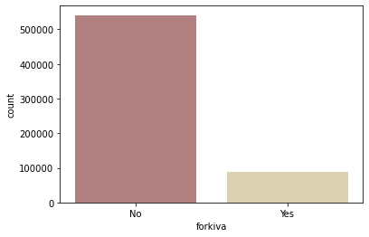
-
kiva만을 위한 loan과 아닌 loan의 평균 funded amount 비교
sns.barplot(data=kiva_themes_df, x='forkiva', y='funded_amount', palette='pink');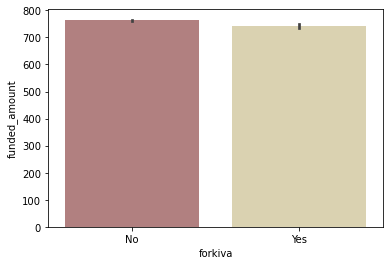
- forkiva=No인 loan이 압도적으로 많지만, 평균 funded amount 자체는 별 차이가 없음
-
kiva만을 위한 loan과 아닌 loan의 분기별 총 funded amount 추이
temp = kiva_themes_df.groupby(['posted_quarter', 'forkiva'])[['funded_amount']].sum().reset_index() plt.figure(figsize=(16, 6)) sns.lineplot(data = temp[temp['posted_quarter'] != '2017Q3'], x='posted_quarter', y='funded_amount', hue='forkiva', palette='pink');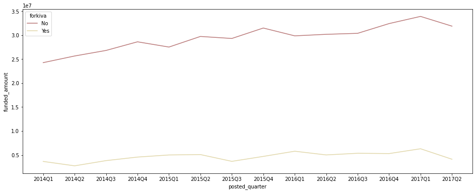
- kiva만을 위한 loan과 그렇지 않은 loan 모두 funded amount가 증가 추세에 있다
country, sector별 forkiva 비중
-
kiva만을 위한 loan 비중이 많은 country 확인
# country별 forkiva=yes인 비중: 총 funded amount를 기준으로 계산 country_forkiva = pd.pivot_table(df, index='country', columns='forkiva', values='funded_amount', fill_value=0, aggfunc='sum') country_forkiva['forkiva_ratio(%)'] = (country_forkiva['Yes'] / (country_forkiva['No'] + country_forkiva['Yes'])) * 100 country_forkiva.sort_values(by='forkiva_ratio(%)', ascending=False, inplace=True) country_forkiva.head(10)country No Yes forkiva_ratio(%) Belize 0 63150 100.00 Chile 0 38525 100.00 Georgia 105875 3263625 96.86 Lao People’s Democratic Republic 59000 1089050 94.86 Moldova 58825 628025 91.44 Myanmar (Burma) 292925 2742925 90.35 Egypt 428750 656175 60.48 Mongolia 532425 676950 55.98 Zimbabwe 1690075 1365500 44.69 India 2932575 2312850 44.09 → forkiva=yes인 비중이 0보다 큰 국가만 시각화
plt.figure(figsize=(9, 9)) sns.barplot(data=country_forkiva[country_forkiva['forkiva_ratio(%)'] > 0].reset_index(), x='forkiva_ratio(%)', y='country', palette='pink');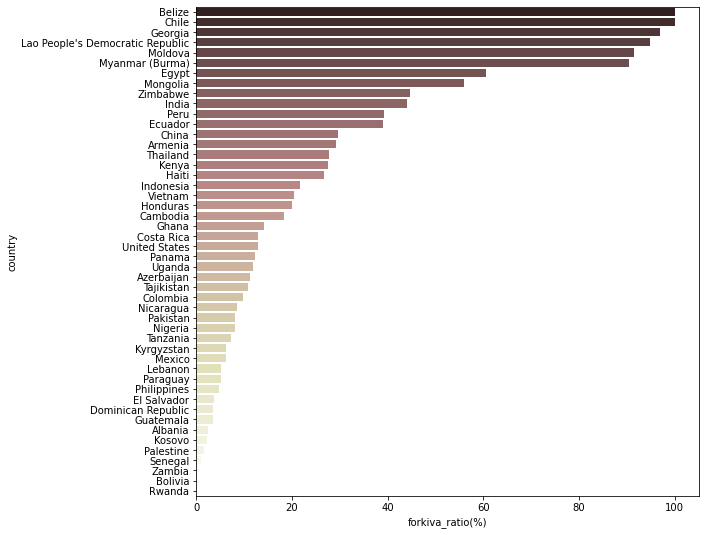
- Belize, Chile는 지원받은 금액의 100%가 kiva만을 위해 구축된 loan
- Georgia, Lao People’s Democratic Republic, Moldova, Myanmar는 90% 이상의 금액이 kiva만을 위한 loan으로 지원받은 것
-
kiva만을 위한 loan 비중이 많은 sector 확인
sector_forkiva = pd.pivot_table(kiva_themes_df, index='sector', columns='forkiva', values='funded_amount', fill_value=0, aggfunc='sum') sector_forkiva['forkiva_ratio(%)'] = (sector_forkiva['Yes'] / (sector_forkiva['No'] + sector_forkiva['Yes'])) * 100 sector_forkiva.sort_values(by='forkiva_ratio(%)', ascending=False, inplace=True) # Sector별 forkiva 비중을 시각화 plt.figure(figsize=(9, 6)) sns.barplot(data=sector_forkiva.reset_index(), x='forkiva_ratio(%)', y='sector', palette='pink');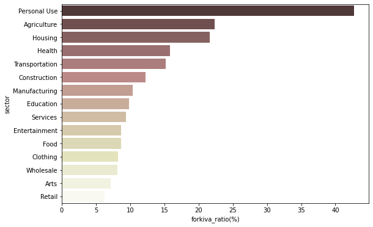
- ‘Personal Use’ sector는 funded amount의 약 43%가 kiva만을 위한 단독 loan으로 지원받은 것
-
kiva만을 위한 loan 중, ‘Personal Use’ sector의 구체적인 use를 파악
temp = kiva_themes_df[(kiva_themes_df['forkiva'] == 'Yes') & (kiva_themes_df['sector'] == 'Personal Use')] temp.groupby('use')[['funded_amount']].sum().sort_values(by='funded_amount', ascending=False).head()use funded_amount to buy a water filter to provide safe drinking water for their family. 805125 to buy a water filter to provide safe drinking water for her family. 628150 to purchase TerraClear water filters so they can have access to safe drinking water. 566900 To buy a water filter to provide safe drinking water for their family. 253300 to buy a water filter to provide safe drinking water for his family. 200375 → use에 등장하는 단어를 wordcloud로 시각화
# Text Cleaning & Case Conversion & Tokenization words = [] for content in kiva_themes_df[(kiva_themes_df['forkiva'] == 'Yes') & (kiva_themes_df['sector'] == 'Personal Use')]['use']: content_cleaned = str(content).replace('.', '').replace(',','').strip().lower() # ., 정도만 제거, strip, lower words.extend(content_cleaned.split()) # 간단하게 공백 기준으로만 쪼개줌 # POS Tagging tokens_pos = nltk.pos_tag(words) # Noun, Verb만 추출 & Lemmatization wlem = nltk.WordNetLemmatizer() lemm_words = [] for word, pos in tokens_pos: if ('NN' in pos) | ('VB' in pos): lemm_words.append(wlem.lemmatize(word)) # Counter로 빈도 계산 c = Counter(lemm_words) generate_wordcloud(c) # 위에서 만들어둔 워드클라우드 만드는 함수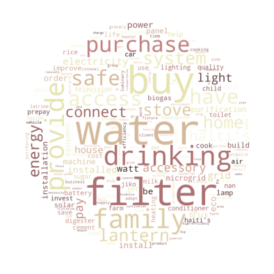
+) Top 10 단어 bar graph로 시각화
visualize_top10_words(c) # 위에서 만들어둔 top 10 단어 bargraph 만드는 함수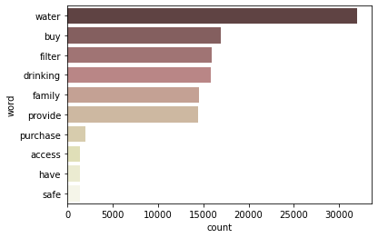
- drinking water 관련 loan이 많다고 판단됨
- 식수도 관련 타 loan / 사업을 끌어오면 kiva 100% loan을 구축하지 않고도 다른 방법으로 금전적 지원이 가능할 수 있다고 생각됨
Field Partner와의 협업 관계 확인
# funded amount순으로 Field Partner Name 확인
loans_partner = kiva_themes_df.groupby('Field Partner Name')[['funded_amount']].sum().reset_index()
loans_partner.sort_values(by='funded_amount', ascending=False, inplace=True)
plt.figure(figsize=(9, 6))
sns.barplot(data=loans_partner.head(10), x='funded_amount', y='Field Partner Name', palette='pink')
plt.xticks(rotation=60);
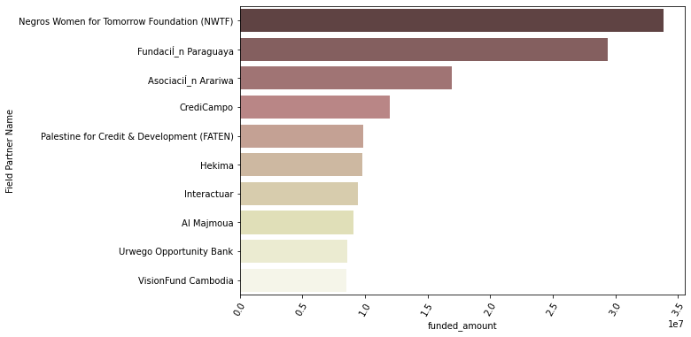
- Negros Women for Tomorrow Foundation (NWTF)가 가장 많은 funded amount의 자금 융통을 담당하는 field partner
+) NWTF가 주로 담당하는 지역 확인:
temp = kiva_themes_df[kiva_themes_df['Field Partner Name'] == 'Negros Women for Tomorrow Foundation (NWTF)']
temp.groupby('country')[['funded_amount']].sum().sort_values(by='funded_amount', ascending=False).head(3)
| country | funded_amount |
|---|---|
| Philippines | 33831500.0 |
| Kenya | 25.0 |
| Bolivia | 0.0 |
- NWTF는 Philippines에서 주로 활동하는 field partner인 것으로 확인됨
국가별 funded amount와 MPI
- 국가별 총 funded amount와 평균 MPI 지수를 비교
-
region 기준으로 merge가 가능할지 탐색
kiva_df_region_set = set(kiva_df['region']) location_df_region_set = set(location_df['region']) print('kiva_df: ', len(kiva_df_region_set)) print('location_df: ', len(location_df_region_set)) print('겹치는 region: ', len(kiva_df_region_set & location_df_region_set))kiva_df: 12696 location_df: 838 겹치는 region: 129- 겹치는 region이 너무 적어서 단순 merge는 불가…
-
country 기준으로 총 funded amount, 평균 MPI 지수를 각각 groupby 후 merge
kiva_df_groupby = kiva_df.groupby('country')[['funded_amount', 'loan_amount']].sum().reset_index() location_df_groupby = location_df.groupby(['country', 'world_region'])[['MPI']].mean().reset_index() groupby_merged = pd.merge(kiva_df_groupby, location_df_groupby, how='inner', on='country') print(len(groupby_merged)) groupby_merged.head()country funded_amount loan_amount world_region MPI 0 Afghanistan 14000 14000 South Asia 0.309853 1 Belize 114025 114025 Latin America and Caribbean 0.0201429 2 Benin 516825 518950 Sub-Saharan Africa 0.320333 3 Bhutan 15625 20000 South Asia 0.123474 4 Brazil 661025 662200 Latin America and Caribbean 0.0272593 → 국가별 총 funded_amount와 평균 MPI 간의 관계 시각화
plt.figure(figsize=(12, 8)) sns.scatterplot(data=groupby_merged, x='funded_amount', y='MPI', hue='world_region', style='world_region', palette='Set2', s=100);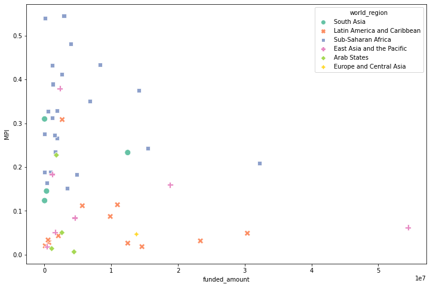
- 평균 MPI가 높은 국가일수록 funded amount가 많을 거라고 예상했지만, 그런 관계는 발견되지 않음
- 오히려 평균 MPI가 높은 (= poverty level이 높은) Sub-Shararan Africa의 국가들 중 상위 8개 국가는 funded amount가 많지 않은 편